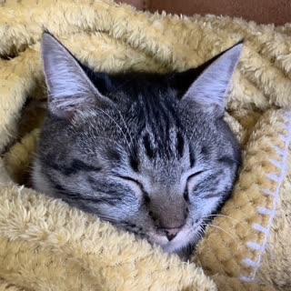

About Curious City

I'm Yusuke Takakura, and I write, curate, and build everything on Curious City. These days I'm based in Sendai, living with three cats who firmly believe my desk chair belongs to them.
Background
I've been a fairly obsessive traveler for years — twenty countries and counting — and that shapes how I think about this site as much as anything else. When I'm the visitor in an unfamiliar city, I know exactly what generic, copy-pasted travel content feels like, and exactly how much better a trip gets with a few honest, specific tips instead.
On the Japan side, I grew up in the Kansai region, went to high school in Australia, and have lived in Tokyo for about a decade — which is also where the English comes from. Back in 2018, before the pandemic emptied out Tokyo's tourist spots, I ran walking tours around Shinjuku, including an izakaya-focused tour through Airbnb Experiences, showing visitors the backstreets and explaining what to order and why. I've also spent time inside the travel industry itself, including work on next-generation online tour technology — the specifics are under NDA, so I can't name names, but it's given me a closer look at how the industry actually works.
This site is built on that mix: time spent guiding people around Tokyo in person, real travel experience abroad, and careful research to fill in the gaps.
Why this site exists
Here's something I noticed on my own trips: when you've already watched a place on YouTube — walked its streets through someone else's camera, seen the drone shot, heard the voiceover — actually standing there can feel like a rerun. The surprise has been spent before you ever arrive.
Travel didn't used to work that way. Before social media, you had a few lines in a guidebook, a dot on a map, and your own imagination. You pictured the place, then walked into the real thing — and the gap between what you imagined and what was actually in front of you was where the wonder lived.
Curious City is built on that older idea. Each listing gives you honest words, practical details, and just enough of a picture to get you curious — not a full video walkthrough that leaves nothing to discover. The goal is to get you to the right place with your sense of surprise still intact, the way a good guidebook used to.
Listings are researched from official tourism sources and my own firsthand knowledge, then written in my own words — nothing here is copied from another site.
The site currently covers ten destinations: Tokyo, Osaka, Kyoto, Yokohama, Nagoya, Kobe, Hiroshima, Fukuoka, Hokkaido, and Sendai — where I actually live. More regions are on the way.
How listings are chosen and updated
I drop a listing if I can't find enough real detail to make it useful — no filler entries just to pad out the count. Opening hours, prices, and access details are checked against official sources before publishing, but places change, so if you spot something that's out of date, tell me and I'll fix it. I go back through listings periodically to check nothing has closed or changed.
How this site was built
Curious City isn't run as a business — it's a personal project, and these days it also doubles as a portfolio piece. Every part of it, from the individual spot write-ups to the site's structure, search, and automated tests, was built by directing Claude Code and other AI tools through the actual engineering work: planning the data model, generating and reviewing well over a thousand structured entries, writing the page templates, and keeping the test suite green along the way.
I don't come from a professional development background — what I bring is knowing how to work with AI tools effectively, and this site is the result: a fully functioning, tested, SEO-structured website, built and maintained end to end without writing the code by hand. If that kind of practical, AI-directed build process is relevant to a role you're hiring for, I'd love to talk.
Because it isn't run commercially, there are no ads or affiliate links anywhere on this site — see the privacy policy for the full details on what data this site does and doesn't collect.
Get in touch
Questions, corrections, a local tip I should know about, or a role you think this could be a fit for — use the contact page to reach me directly.